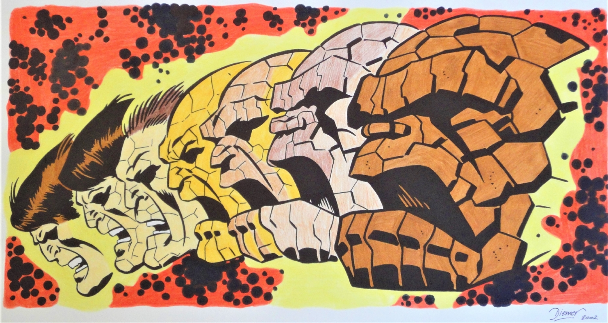
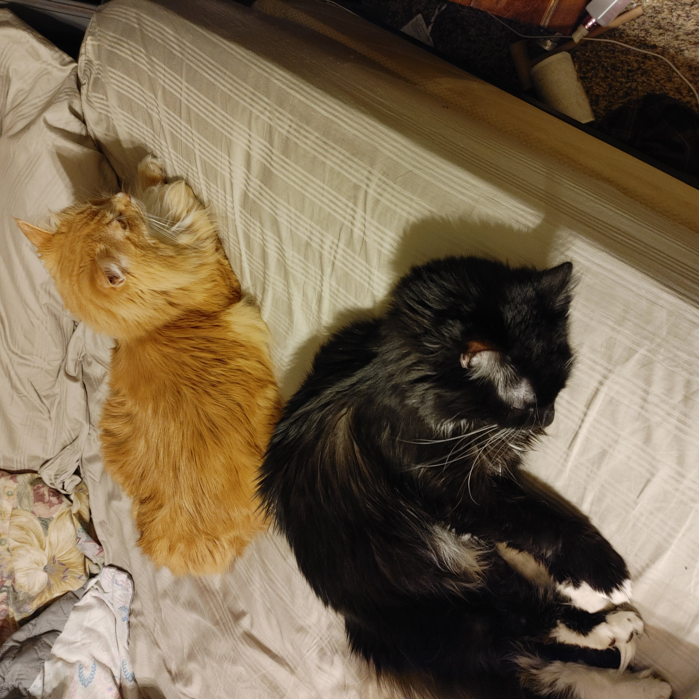

The Thing. Member of the Fantastic Four. Battle cry: "It's clobberin' time!" Origin name: Benjamin Jacob "Ben" Grimm. Find out more, if you want.

Goes by:
Miss Thang
Ariah
Ria
Momma
Gorilla Sister
Sergeant Lane
Mother of a brilliant, stubborn, and hilarious boy. Below I have included my all time favorite video of my son. It proves that I make the best babies, those with upmost dignity and class.
Here are my two precious babies. Nemo is the large orange cat who is old and never stops talking. Kalonji is the black and white crackhead who has asthma and fears nothing.
